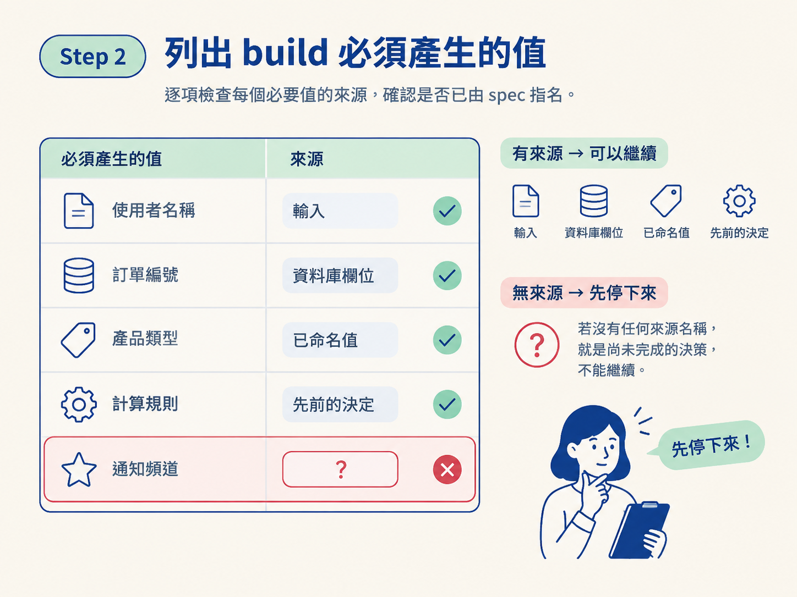
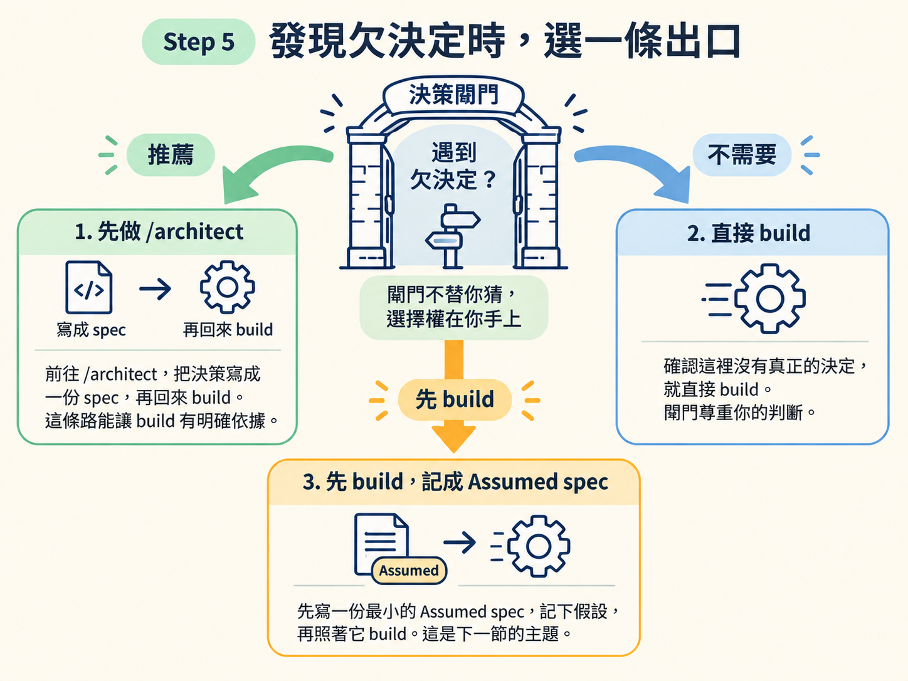

/develop 的 spec 閘門先停車你會跑一次 input coverage 檢查：列出這次 build 必須產生的每個值，逐一確認 spec 是否指名它的來源。完成後，你能分辨哪些只是本地實作細節，哪些其實是必須先做的載重決策。
動手前，先準備好這個 feature 的 scope 檔、scope 指向的 spec，以及最靠近的 AGENTS.md。這個檢查是 /develop 的 Step 0，永遠排在 build 之前。
閘門的判斷不能建立在整棵 docs/ 樹或模糊印象上。請依序讀這三種資料：
docs/ 樹。spec 指標打開它，只讀 build 需要的段落：## Requirements、## Decision、設計段、## Build plan、## Consequences。略過 rationale 這類決策歷史。AGENTS.md。有些決策早已寫在這裡，例如「登入供應商已經選定」。如果決策已經存在，就不需要再開一份新 spec。若 scope 檔標著「needs a decision」，卻沒有 spec 指標，結果很明確：這個決定還沒做，也還沒記下來。
不要先問「我覺得這是不是在發明東西」。負責蓋功能的模型很容易把真實決策說成「只是接線」，然後繼續往下做。
改用機械式的 input coverage（輸入覆蓋）測試。它把「有沒有決定」拆成可以逐項核對的問題：
列出這次 build 必須產生、計算或顯示的每一個值
（來源：驗收條件，以及 spec 的設計）。
對每一個值問：
spec 有沒有指名它從哪裡來？
（一個輸入、一個資料庫欄位、
從某個已命名值推導、或一個先前的決定）
只要有一個必要的值沒有被指名來源，
它就是一個還沒有做的決定。逐項檢查時，若某個必要值的來源是輸入、資料庫欄位、某個已命名值，或先前已做的決定，就能繼續往下做。若連來源都沒有名字，就先停下來。這不是小細節，是決策還沒做完。

input coverage 是第一關。即使每個值都有來源，只要你還得發明以下任一項，就代表還有決策欠著：
design.md 和一頁層級的 spec 把它們釘死，否則仍算欠決定。/architect 詢問。這個例外要用得很窄。只有在 spec 已經指名來源，而你只是從既定來源中選擇寫法時，才算本地實作細節。例如選哪種迴圈、變數叫什麼名字，或呼叫哪個既有的輔助函式。
反過來，只要某個選擇決定了值的來源，或決定了驗收條件所約束的行為，就算它看起來很小，也屬於載重決策，不能順手決定。
例如規則要求「算出使用者今天的日期」，而程式必須從「使用者最後一次讀取的那筆資料上的時區」推導。這不是單純的接線，因為你選定了「今天」這個值的來源，而這個值又受到驗收條件約束。遇到這種情況，要停下來問。
以下才是純實作：
design.md 的元件。如果檢查結果只有這些工作，就不需要新決策，可以直接進入 build。
若 input coverage 或其他檢查發現決策欠著，閘門不會替你猜，也不會默默停住。請明確選擇以下其中一條路：
/architect，把決策寫成一份 spec，再回來 build。這次 /develop 會直接結束，並留下清楚的銜接指令。推薦這條路，是因為 build 會有一份 spec 可以遵循。Assumed spec，記下假設，再照著它 build。這是下一節的主題。
完成這個閘門後，結果只能是三種之一：
/architect。Assumed spec。spec 閘門是
/develop永遠的第一步。它不靠「我覺得」，而用 input coverage 測試機械地問：build 必須產生的每個值，spec 有沒有指名來源？沒有就是欠決定。供應商、資料庫、整個畫面、功能行為，也都算。判斷完，只能走三條路之一：回/architect、確認不需要，或先記成Assumedspec 再 build。閘門把「AI 擅自發明」的空間，壓到剩下三個你可以自己選的出口。
下一節會實際拆解第三條路：Assumed spec 長什麼樣、要記下哪些事項，以及為什麼它明明代表「還沒真正決定」，卻不會擋住你把功能標成完成。